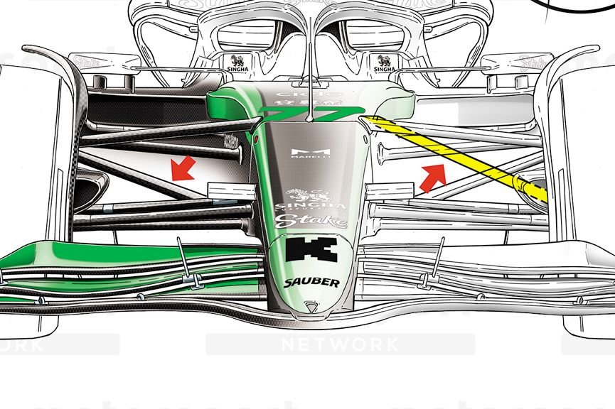
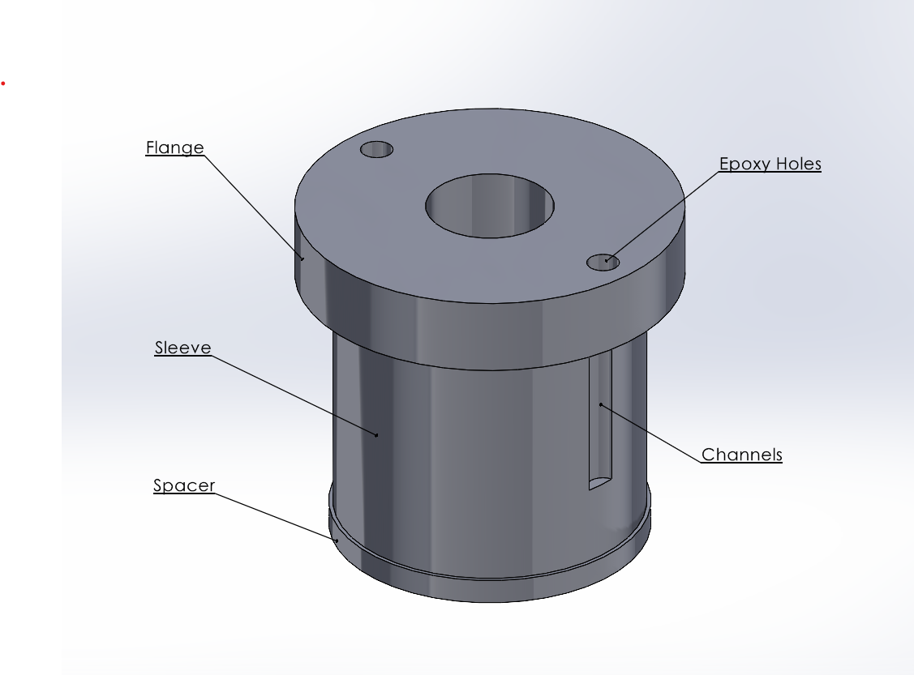
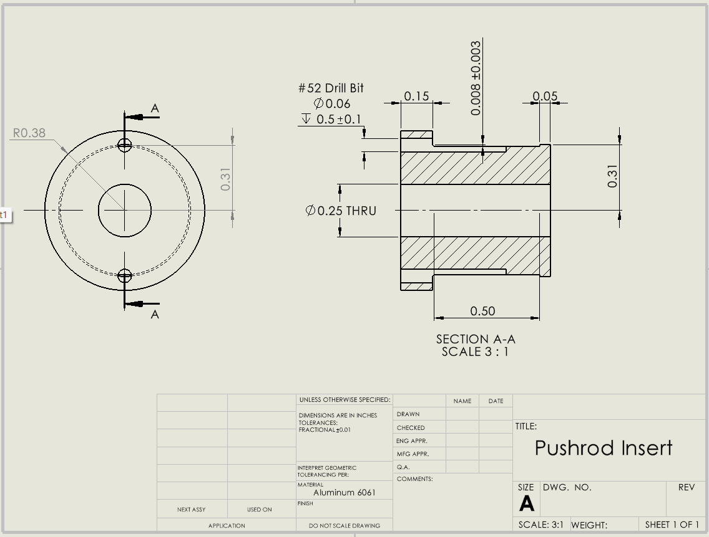
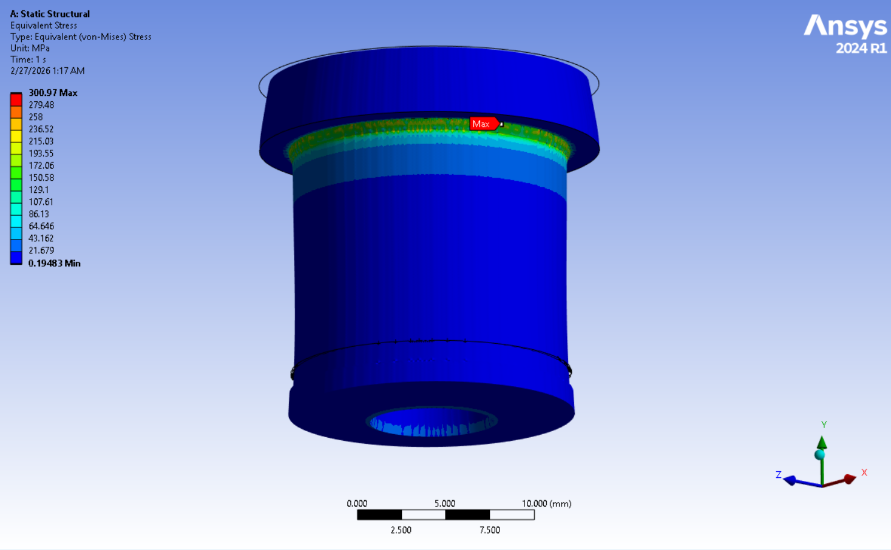
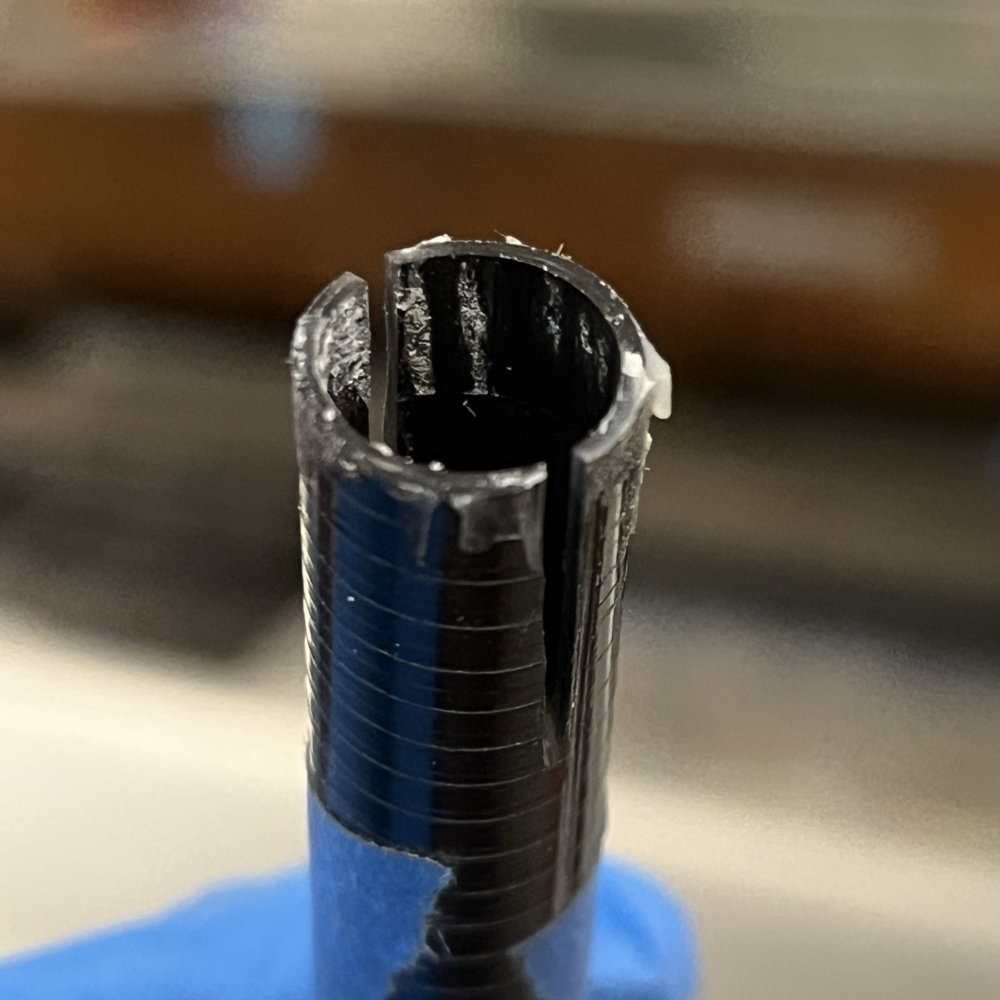
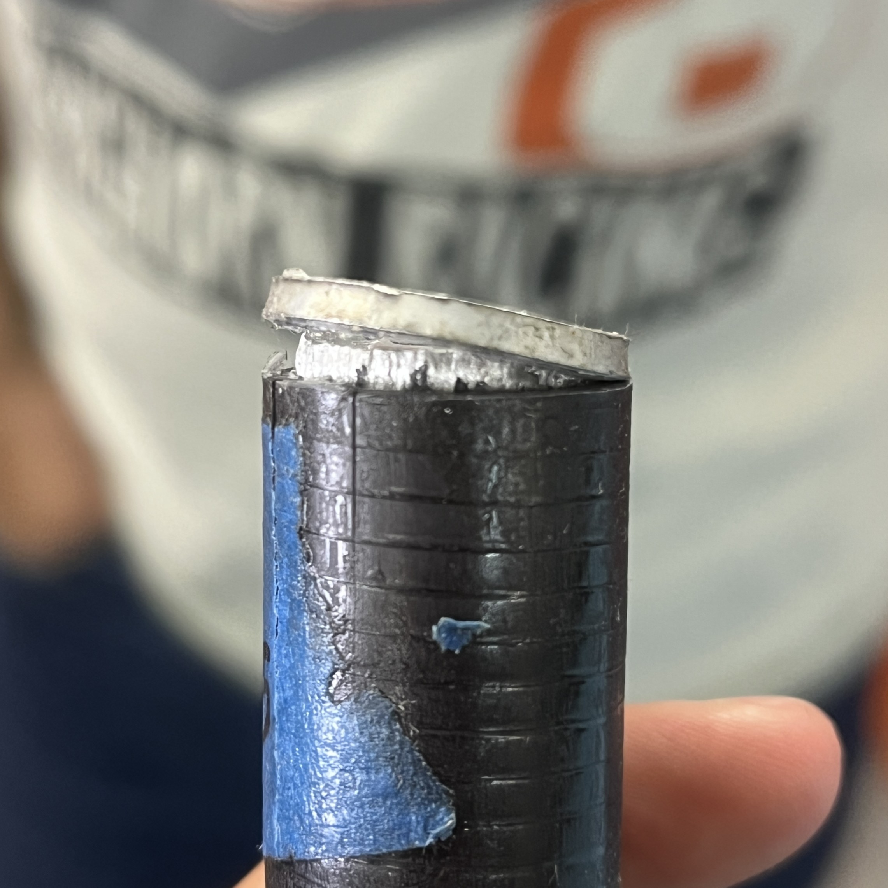
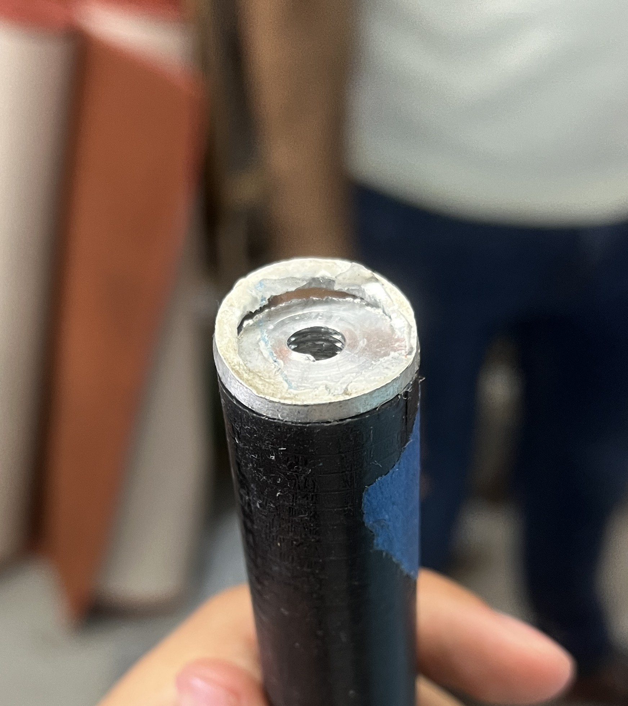

Overview
Designed and tested a carbon fiber replacement for aluminum suspension pushrods to reduce weight while maintaining structural performance. Responsible for insert design, bonding strategy, and experimental validation.

Tools & Methods
- CAD modeling and engineering drawings
- FEA using ANSYS Mechanical (ACP)
- Tensile testing (Instron machine)
- Compression testing (hydraulic press)
- Epoxy bonding and composite manufacturing
Engineering Challenges
- Carbon fiber anisotropy (strong in tension, weak in compression/shear)
- No direct threading → required bonded insert system
- Reliable adhesion between aluminum and composite
- Maintaining fiber continuity while enabling assembly
Design & Decisions
Bonded Insert System
Developed an internal aluminum sleeve to transfer load from the composite tube to a bolted joint without damaging fibers.
Insert Geometry Optimization
Sized insert length using epoxy lap shear data to maximize bond strength while minimizing added weight.
Epoxy Flow Strategy
Integrated internal channels within the insert to ensure full adhesive coverage without drilling into the carbon fiber tube.
Failure Strategy
Designed for controlled failure progression:
Cohesion → Adhesion → Composite → Insert
Surface Preparation
Investigated abrasion and chemical treatment methods to improve bond strength between aluminum and carbon fiber.



Testing & Results
Tensile Testing
Initial tests achieved ~5% of predicted strength due to poor adhesion. After improving bonding with silica filler, strength increased to ~30%. Adhesive failure remained the limiting factor.

Compression Testing
The insert flange failed before the composite tube, indicating insufficient insert strength. Local splitting in the tube suggested hoop stress limitations.


Key Takeaways
- Adhesive bonding is the primary failure mode in composite-metal systems
- Surface preparation significantly impacts performance
- Insert geometry strongly influences load transfer and failure behavior
- Composite members can outperform expectations, but joints govern reliability